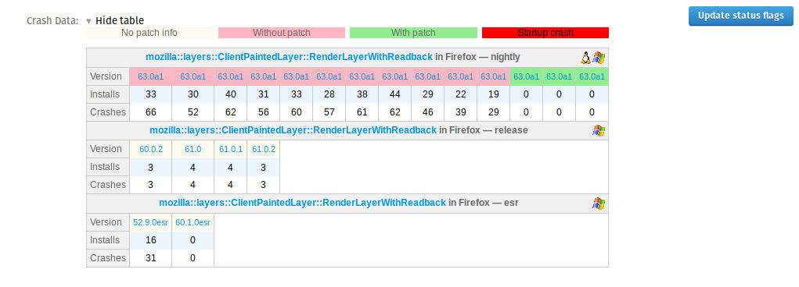

What's crash-stop ?
Crash-stop is an addon for Bugzilla to display crash data and patch information in a bug report
The addon gets crash signatures from the field cf_crash_signature and the patch information are guessed in parsing the comments to look for mercurial urls containing revision hash.
The only information sent to the server are signatures and pair channel/revisions.
The official builds are coming from buildhub and with a request on crash-stats, the builds are filtered to remove builds with a very low crash volume (sometimes a build is respan because errors and so the previous is almost useless/meaningless).
How to read the data ?
Here is an example of what you can see with the addon on Bugzilla:

For each signature appearing in the bug, we've data for each affected products (Firefox/FennecAndroid) and release channels (nightly/beta/release/esr).
There are several data here:
- the total number of crashes (Crashes row)
- the total number of crashes for different installs (Installs row). This number is useful to help to see the severity of crash:
- 1000 crashes for 1 install is not so important
- 1000 crashes for 100 installs is pretty bad because the number of affected users is not so high but it means that these users are crashing a lot
- 1000 crashes for 1000 installs is very bad...
- the affected platforms (Windows/OS X/Linux/Android) are shown with an icon on the right of the table (there is a tooltip on the icons to show the percentage)
- for a given buildid, if more than 50% of all the crashes have the flag "startup_crash" set to true, the corresponding cell in the row Crashes are in red.
- on the screenshot, some versions are colored in pink and others in green.
With the revision urls found in comments, we can get the pushdate of the patch and so guess what are the builds containing the patch, so:
- the versions in pink are the ones without the patch
- the versions in green are the ones with the patch
so here we can see that the patch had a positive effect on the crash numbers and we can guess that it worked.
If the volume would have been more important on release or esr then it'd be the occasion to request maybe an uplift.
What's the button "Update status flags" ?
The addon reads all the status flags to check the ones which should be updated.
So in this case, click on the button to see the changes (in red) proposed by the addon, nothing is done automatically, you've to save the changes by yourself.
Something wrong or something missing ?
In this case don't hesitate to file a bug: github.